Redesigning Austrip to Boost Booking
Austrip is an Israeli company running tours across Austria and its neighbors. The original Austrip platform was outdated, cluttered, and lacked visual order, which hindered the booking process.
I redesigned the interface from the ground up, then built it as a working bilingual site. By simplifying the flow and adding clear trust signals, I turned a chaotic interface into a clear, trust-driven booking journey.
Problem
The original platform was outdated, cluttered, and lacked visual order, resulting in a chaotic interface that hindered the booking process.
Solution
A ground-up redesign of the interface, simplifying the flow and adding clear trust signals throughout the booking journey.
Impact
A clear booking journey that turns a confusing experience into one that builds trust from the first click.
Role UX/UI design, built in code · Tools Figma, Claude · Platform Web + mobile, Hebrew and English
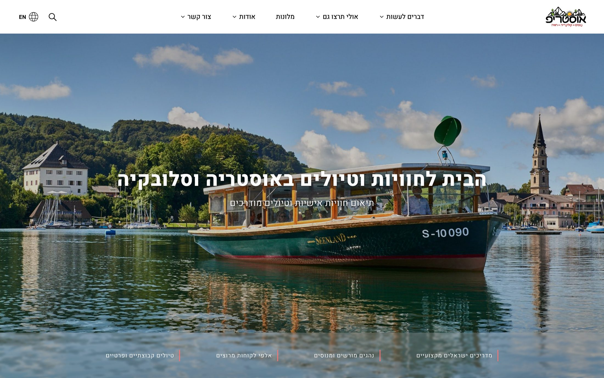
Who it is for
To keep the design grounded, I wrote a persona for the typical Austrip traveler.
Michal, 34, marketing manager. She wants authentic, stress-free travel experiences without spending hours on research, and values transparency and quick decisions. She gets overwhelmed by cluttered websites, distrusts hidden fees or unclear cancellation policies, and prefers to book from her phone.
For Michal, I prioritized a quick-read layout, clear trust signals and a smooth mobile booking flow.
Competitive Research
I ran a competitive analysis of leading travel platforms to understand industry standards for user-centric design, focusing on how they structure complex information, integrate social proof, and design clear calls to action.
Key Findings
- Visual Trust: top-performing sites use a consistent visual hierarchy to build confidence immediately upon landing.
- Scannable Content: successful platforms use structured lists, icons and concise headings rather than dense text blocks.
- Transparency: clearly displayed logistics like pickup details, and policies like cancellation terms, reduce anxiety during booking.
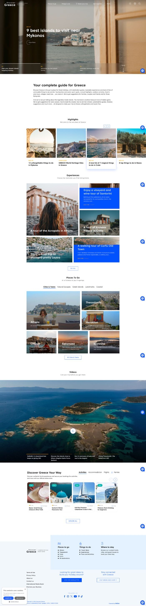
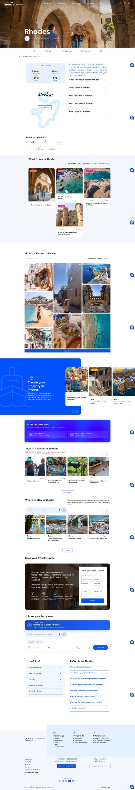
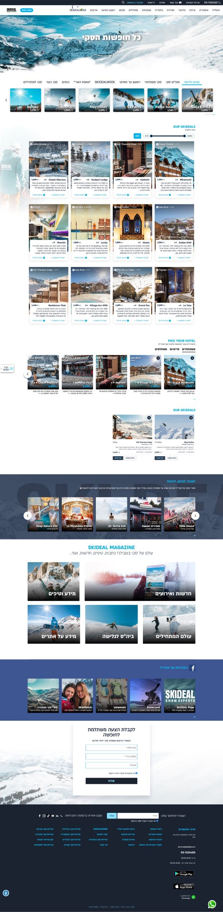
Process & Decisions
Following the research, I translated the insights into a clean, intuitive design, guided by two goals: reducing cognitive load and building trust.
- Redefining Visual Hierarchy: price, availability and cancellation policy moved to the top, so users find what they need without scrolling.
- Enhancing Scannability: dense paragraphs became structured lists and icon-based sections such as "What to Bring" and "Essential Info".
- Integrating Social Proof: real reviews and star ratings validate the experience and reduce booking anxiety.
- Simplified Navigation: a clearer, consistent navigation keeps "Check Availability" and "Book Now" always within reach.
Early Wireframes
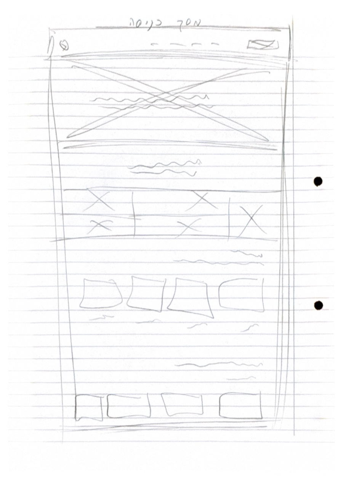
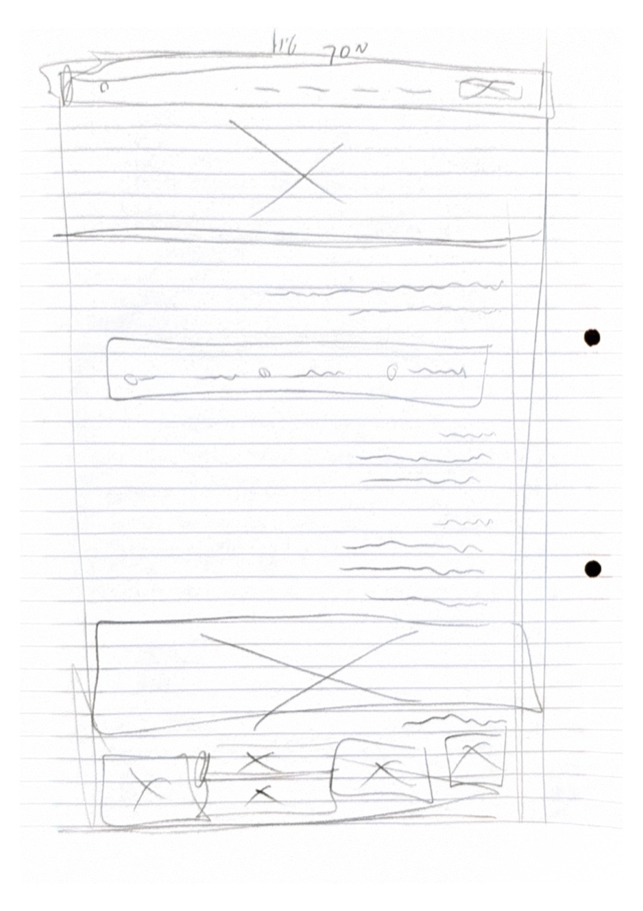
The homepage, before and after
The old homepage stacked text, banners and links with no clear order. The new one opens with one big photo and a single message, then groups the tours by category so they can be scanned at a glance. Scroll inside each page to compare.
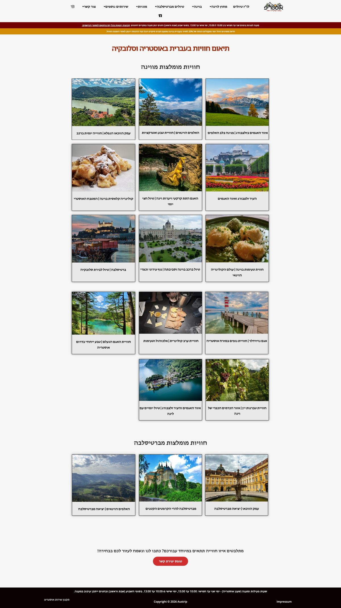
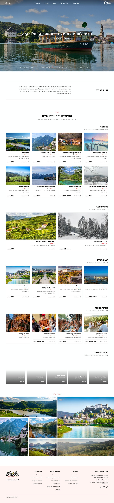
The price and one action, up front
The tour page told the same story. The old layout buried the price and the call to action under dense paragraphs, with a long booking form that repeated itself twice on the same page.
I rebuilt it around a clear hierarchy: the price and a single "Book now" action up front, key facts at a glance, and the details that matter (itinerary, what to bring, cancellation policy) in short, scannable sections.
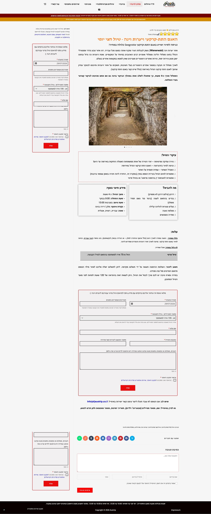
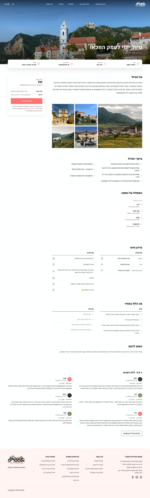
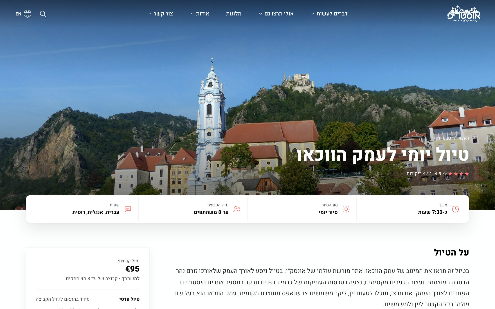
From Figma to a working site
I didn't stop at mockups. I built the whole site in code, page by page, with Claude as my development partner. Every text, price and review was taken from the original site word for word, so the redesign could be judged on structure and clarity alone. Then I added an English version of every page.
- 56 pages in Hebrew, each with an English copy
- 17 tour pages with a booking flow
- 11 hotel pages with a quote request form
- 6 category pages, plus taxis and services
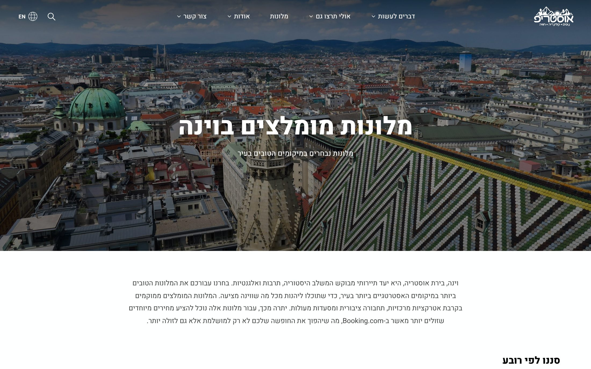
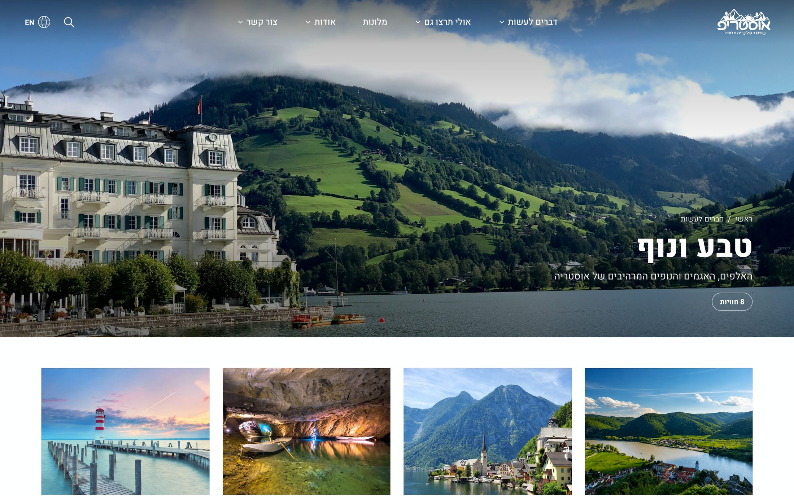
Built for the phone
Most travelers browse on their phone, so every page was designed mobile first: key facts come first on the tour page, and the booking bar stays in reach while you scroll.
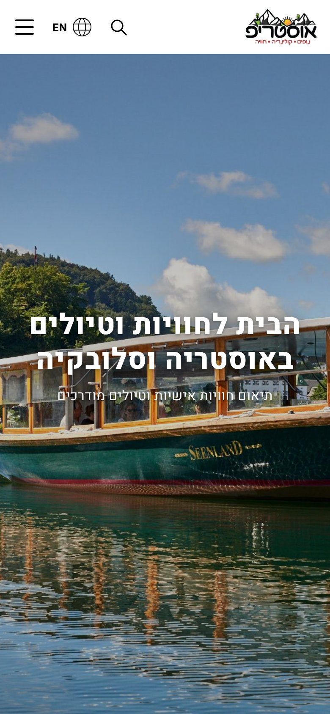
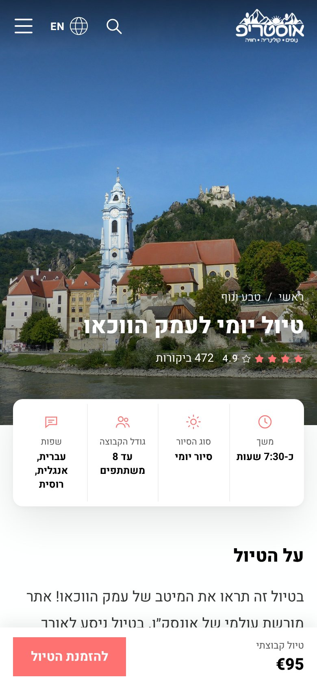
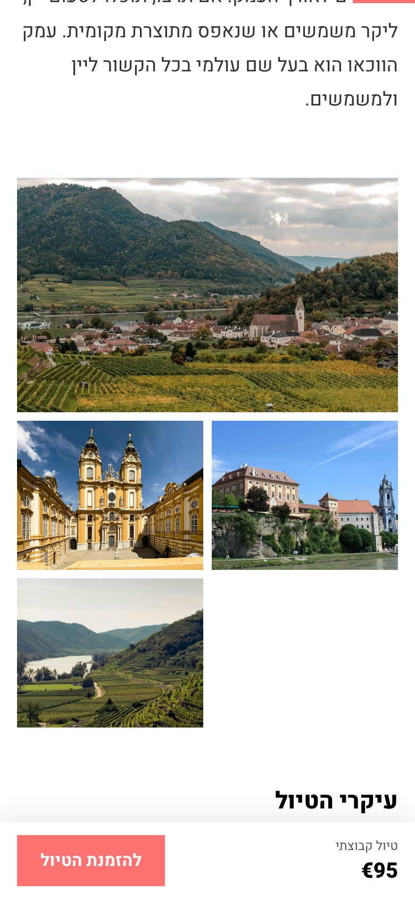
Behind the site
Every form on the site now sends exactly what the team needs to reply, and all of it lands in an admin dashboard I designed for the Austrip team. It has its own case study: Austrip Dashboard →
What I took away
Simplicity builds trust. The clutter on the old site wasn't just an aesthetic problem, it created uncertainty. Removing noise makes people trust the process more, even without changing a single word of content.
Research before redesign. Analyzing competitors like Discover Greece and SkiDeal helped me understand the industry standard before I started designing, instead of guessing what "looks good."
Small friction points add up. A booking form that repeated itself twice on the same page seemed minor, but it's exactly what makes users drop off. Fixing small points like this was a big part of the work.